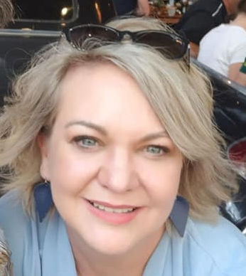

RESUME OF SUNELLE BRITZ (BRINELLE)

OBJECTIVE
To apply for a position as remote digital designer or programmer showcasing:
- My skills as upcoming developer and webdesigner
- Projects I am involved with
- Skills involving hardware and software
EDUCATION
- Highschool Ben Viljoen - Gr12 (1993)
- English - A
- History - A
- Afrikaans - B
- Business Economics - A
- Mathematics - B
- Typing - A - 65 wpm
- B.A Ed - University of Pretoria 1997 - 3rd year level
- Courses attended
- Office 365
- Azure fundamentals AZ-900
- The Complete 2023 Web Development Bootcamp - Udemy
- BYOL - Responsive webdesign course
- Wordpress basics
WORK EXPERIENCE
- IT Technician (Hardware & Software)
- Daily back-ups (Carbonite) & Ensuring that Onedrive is syncing
correctly on all computers (Shared folders)
- Repair, purchase and replace minor computer hardware
(Cooling fans, Power supplies, Memory, Hard Drives, Graphics
cards, Ethernet Cards), printers and scanners.
- Maintaining of network and solving network errors (Routers &
24 Port Switches), Creating guest Wi-Fi Access
- Diagnosing issues with Optometric testing equipment -
hardware and software (OPD, Fundus, VF, Keratograph, OCT)
- Responsible for supporting Windows XP/ Windows 7/ Windows
8.1/ Windows 10 & 11, Office 365, Backup products, Anti-Virus
products, DNS/DHCP, TCP/IP, Ethernet, wireless router and
Firewall Configurations.
- Optimax and HealthBridge troubleshooting and maintenance
- Webdesign and Maintenance
- Creating website for attorney in Joomla
- Creating website for Optometrist in Wordpress
- Creating website for Neuro Optometrist in Wordpress
- Creating website for own business with Visual Studio Code - HTML, CSS, JavaScript
SKILLS
- Exceptional written and oral communication skills
- The ability to work under pressure and to tight deadlines
- Good organizational and time management skills
- The ability to research, digest, analyze and present material clearly
and concisely
- Excellent interpersonal skills – working both well on my own with
own initiative and in a team
- Attention to detail
- Flexibility and adaptability to juggle a range of different tasks
My Hobbies
Contact me